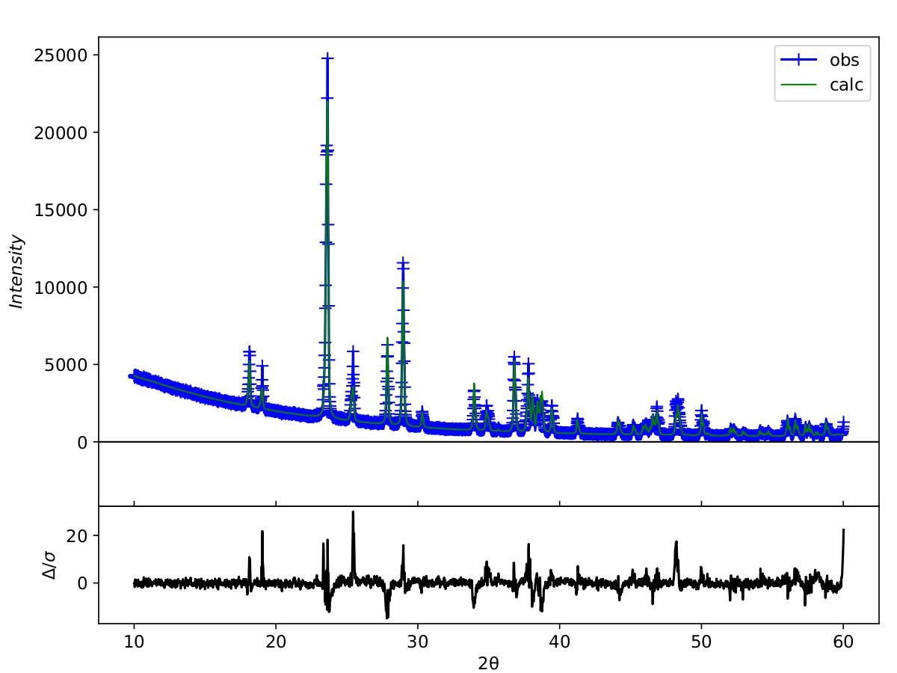
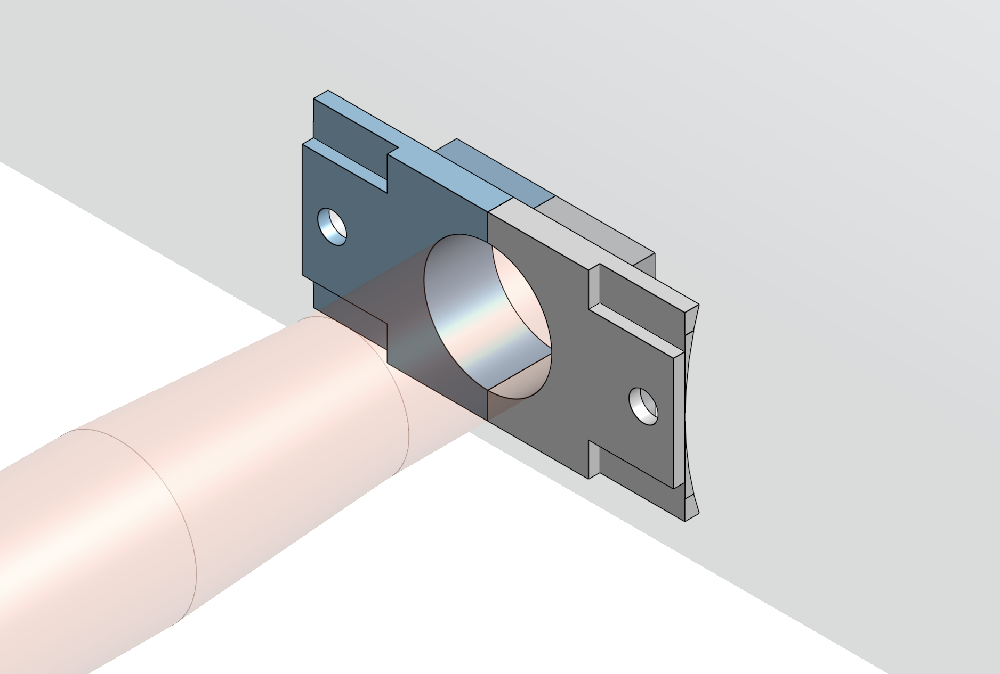
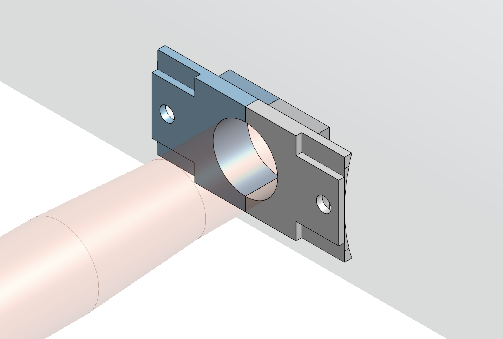
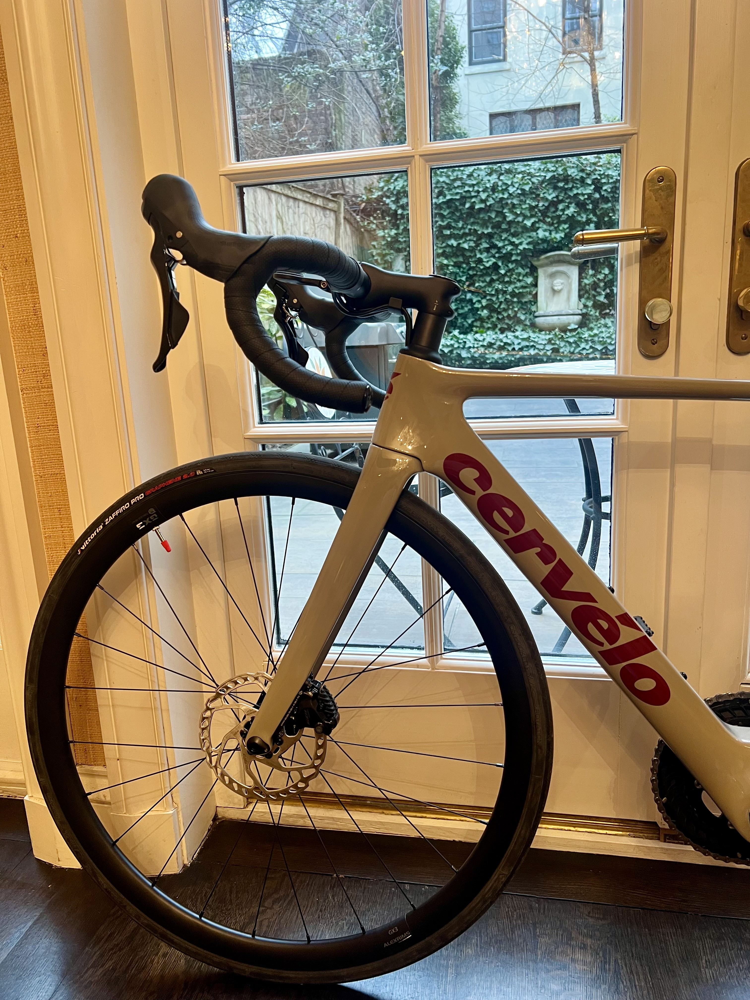
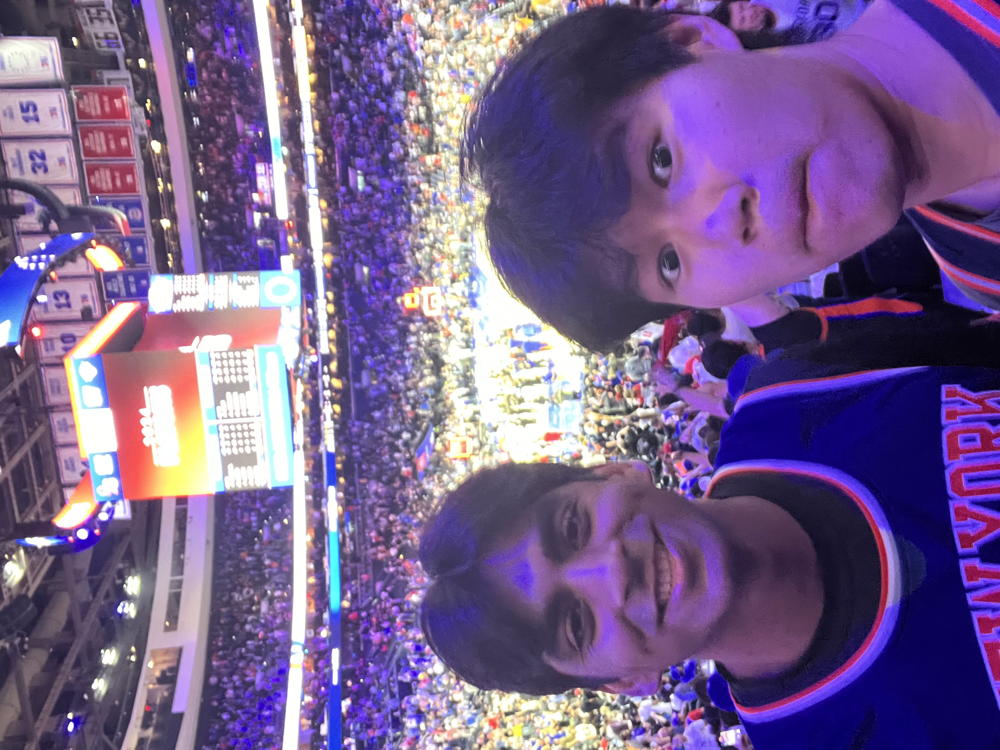

Hi! I'm Will
I'm a first-year at studying materials science & engineering. I hope to work at the intersection of computational materials and the energy sector.
At Northwestern I am an undergraduate researcher in The Haile Group, wind tunnel engineer for NUSTARS (rocketry society), and mix team member for Concrete Canoe.
Try bolded Woah. This only works for the small bolded text but there's 1 exception, let's see if you can find it! text! You can reach me at willwang2028@u.northwestern.edu Copied!
Education
Evanston, Illinois
Research
I'm an undergraduate student researcher in Prof. Sossina Haile's energy materials group under Gordon Peiker and Sara Sand. I'm investigating Ba-doped, superprotonic, CsH2PO4 electrolytes  for fuel cells and implementing methods to accelerate impedance measurement time.
I previously worked with
Prof. Robert Topper
at Cooper Union where I conducted density functional theory and Monte Carlo simulations of
HF clusters.
 I also developed
Lennard-Jones parameters
I also developed
Lennard-Jones parameters
 of noble gas clusters for TransRot, a molecular simulation software.
of noble gas clusters for TransRot, a molecular simulation software.
In high school I was part of the
Stan-X molecular biology program
where I developed a
novel transgenic insertion
 of a SX4 P-element in the tapas gene of
drosophila melanogaster
of a SX4 P-element in the tapas gene of
drosophila melanogaster
 (fruit flies).
(fruit flies).
Activities
I'm part of
NUSTARS
(Northwestern University Space Technology and Rocketry Society). I work as a wind tunnel engineer for NASA's student launch challenge. I developed
testing procedures
 for full-scale rockets at Embry Riddle Wind Tunnel Facility, used
CAD

to design mounting hardware, and analyzed
wind tunnel data
for full-scale rockets at Embry Riddle Wind Tunnel Facility, used
CAD

to design mounting hardware, and analyzed
wind tunnel data
 with pandas.
with pandas.
I'm also a member of Northwestern's concrete canoe team where we race concrete canoes less dense than water. I help make the mix and with compression testing to develop a lighter stronger mix.
Random
In my free time I enjoy watching professional road cycling, riding my Cervélo soloist,  cheering on the New York Knicks  Game 4 Knicks at 76ers (2024 NBA Playoffs Round 1) and Williams Racing.
Recently I've enjoyed watching Severance (Season 2), Invincible (Season 3), and The White Lotus (Season 3).